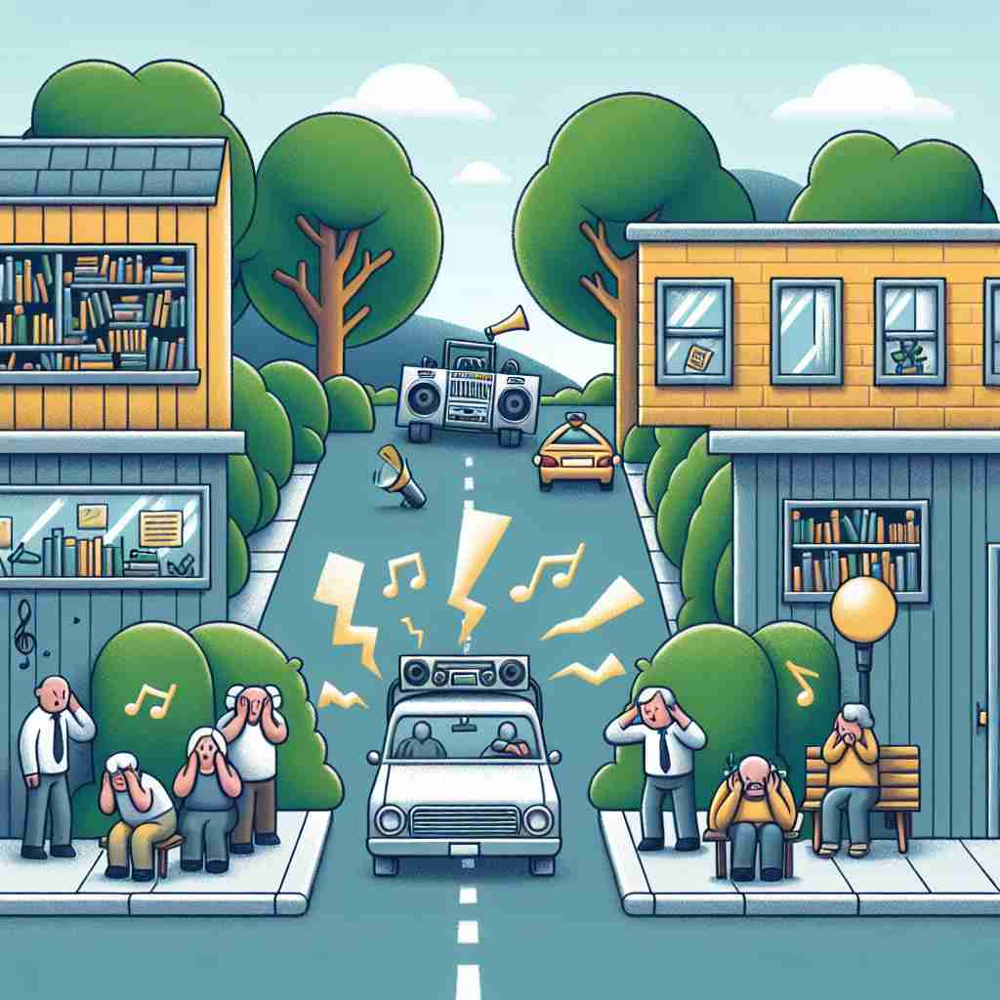

💬 The disruptive noise from the car made everyone uncomfortable.

💬 His disruptive behavior made it hard for others to concentrate in the library.
💬 The disruptive traffic jam made it hard for people to move through the city.
🔈 [dɪs'rʌptɪv]
🗝️ adj. causing trouble and therefore stopping something from continuing as usual
🖼️ 在一间安静的图书馆中，学生们正在专心学习。突然，一个手机铃声打破了宁静，一名学生在寻找手机的同时，铃声吸引了所有人的注意力，打断了大家的思路。这完美地演绎了'disruptive'作为造成麻烦并中断正常活动的含义。
🔍 想象'disruptive'如同一块石头投入平静的湖面。核心含义是"造成麻烦并阻止事物按常规进行"，就像石头打破了湖面的平静。这个概念延伸到商业和创新领域，表示打破现有模式，带来革命性变化。无论是负面的干扰还是正面的创新，'disruptive'都体现了一种打破常规、引起变化的力量。通过这个形象，你可以更容易理解和记忆'disruptive'的各种用法。
💬 The disruptive noise from the car made everyone uncomfortable.
💬 His disruptive behavior made it hard for others to concentrate in the library.
💬 The disruptive traffic jam made it hard for people to move through the city.
🌳 由词根 "rupt"（破裂）和前缀 "dis-"（分开，否定）组成，加上形容词后缀 "-ive"。表示能够造成破坏或干扰的。
💡 记忆 "disruptive" 可以联想为 "打破" 和 "干扰" 的结合。想象一件东西在正常运作中被打破，引起混乱和干扰，帮助记忆其含义。
🗝️ adj. innovative and challenging the existing way of doing things, especially in business
🖼️ 在一个现代化的创业公司的会议室里，团队正在讨论一项新技术。这个新想法颠覆了传统的操作流程，引起了与会者的热烈讨论和思考，展示了'disruptive'作为创新且挑战现状的含义，尤其是在商业领域。
💬 The company's disruptive technology revolutionized the industry.
❓ 从"打断常规"扩展为"挑战现有方式"
🗝️ adj. causing or tending to cause disruption
🖼️ 在一个热闹的课堂上，一个活泼的孩子突然开始高声唱歌，课堂纪律顿时陷入混乱，老师不得不暂停教学。这充分体现了'disruptive'指引起或倾向于引起混乱的含义。
💬 The strike had a disruptive effect on public transportation.
❓ 直接源于核心含义，强调造成中断或混乱的倾向
🗝️ adj. relating to or noting a new product, service, or idea that radically changes an industry or business strategy
🖼️ 在一个大型科技展会上，公司推出了一款全新的虚拟现实产品，这个产品大幅改变了市场规则，吸引了众多投资者和媒体的关注，展示了'disruptive'与改变行业或商业策略的创新有关的新产品、服务或理念。
💬 Disruptive innovation often starts in small, overlooked market segments.
❓ 从"打断常规"延伸为"彻底改变"